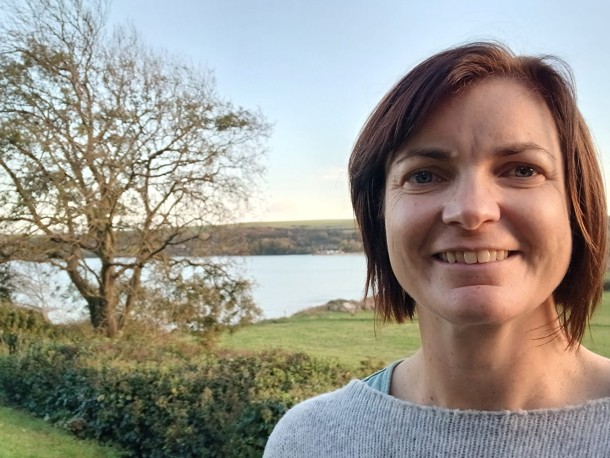

Come walk the
Earth Camino!

About the Walk
On Monday 9 November, Cecily Maher will set off on a six-day walk from Waterford to Dublin to reach the National Climate March on Saturday 14 November.
During this time, Cecily will walk more than 220kms, over five marathons and traverse five counties. The Earth Camino will take in the beautiful South East Greenway to New Ross, the Barrow Way to Kildare, and the Grand Canal to Dublin City.
Cecily is a volunteer with the B Corridor Waterford, the Eco-Action Group of St Joseph's, St Benildus' & St Mary's Parish, and is a Laudato Si Animator. As a course facilitator and retreat provider, her work focuses on healing any sense of separation between humanity and the Earth.
Why she is walking
- To slow to the rhythm of nature
- Listen to the cry of the Earth
- Raise awareness of the climate crisis
- Solidarity with the National Climate March
She would be delighted for you to join her along the route. Come for a few steps, a kilometre, a stage or a day. All are very welcome!